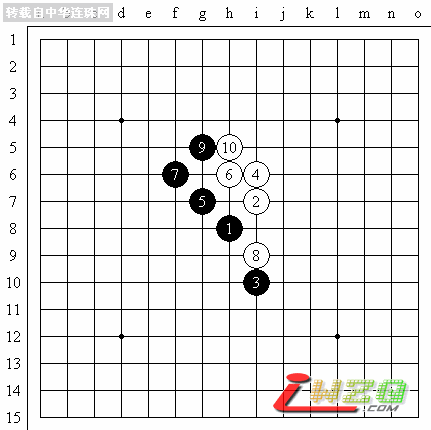

现场直播【京沪连珠擂台赛之顾婉卿VS姚金蕊】
#1 现场直播【京沪连珠擂台赛之顾婉卿VS姚金蕊】 作者：有志青年 发表时间：2007-4-14 16:55:49
【有志注：】本文内容转载自：中华连珠网，原文地址：http://www.shwzq.com/online/ShowArticle.asp?ArticleID=1237，顾炜七段在比赛现场做直播讲解。
大家好。京沪连珠擂台赛即将开始，两地选手已经到场。目前，已到赛场的有：
上海五子棋委员会主要负责人顾炜七段
中华连珠网理事长罗锦伟六段
上海五子棋委员会负责人、上海段赛场裁判长黄民城二段
北京队领队刘彤七段
上海五子棋委员会负责人、上海队主帅兼领队葛凌峰七段
中国连珠网随行记者姚志勇四段
北京队先锋姚金蕊四段
上海队先锋顾婉卿三段
上海段赛场裁判员周彪初段、易伊神6级
北京队次锋胡瑜四段
上海队次锋俞满江五段
上海五子棋委员会会员吴杰三段
裁判长黄民城现在正在安排选手就座。
现在，本届组委会上海方面代表罗锦伟向参赛选手表示祝贺，并希望选手赛出好成绩。
北京队领队刘彤表示，作为棋手时没有机会参加这样的京沪擂台赛，很遗憾，这次很荣幸作为教练带领自己的学生来上海参赛，希望双方能赛出风格，赛出好成绩，预祝比赛圆满成功！希望今后京沪对抗赛能继续办下去。
上海队领队葛凌峰表示，非常高兴看到京沪擂台赛的举办，在很多年前上海和北京两地五子棋组织就想办这样的比赛，但是因为各种原因迟至今天。双方这次队员的组成充分体现了老中青三结合的队伍结构，这也是中国五子棋10多年发展的成果。在此预祝本次比赛成功，并能在今后继续举办。
裁判长黄民城正在宣布比赛规则，并安排选手进行猜先。双方很谦让，最终，姚金蕊执白，顾婉卿执黑进行猜先。
姚金蕊猜到黑棋布局。经过短时间考虑，选择了“岚月”开局。
顾婉卿选择了交换。这也在情理之中，毕竟目前的研究表明，岚月开局是黑大优的局面。两位女选手在比赛中，给我们的感觉就象两位身怀绝技的女侠一决高下。
姚金蕊给出的白4是非常著名的一个防御点，其中隐含了很多攻击和防御的变化。可以说这样的布局变化是非常考验一个棋手的基本功和实力，也是低段棋手向高段棋手冲刺的必须要过去的门槛。顾婉卿的两打非常正确。A点是一打必胜点。
整个比赛场地非常寂静。值得一提的是，为了尽可能给2位选手比较好的赛事场地，组委会上海段选择了四星级宾馆的专用对局室。直播也是在这里进行的。
因为本次直播首次选择了无线上网的方式进行，因此在图谱传递速度上可能会略微比实际对局慢些，也请各位原谅。
姚金蕊经过考虑选择了实战第5手，这也是很正常的选择。此后双方将进入定式阶段的较量。

到第10手都是非常正常的变化。在这个唯一可以有权利选择变化的是黑棋。如黑7选择在G6就是一种变化，但是对于黑棋今后的发展并不是非常有利。因此实战的黑7最强。
这几天，上海气温骤增，因此赛场内稍微有点闷热。而上海的宾馆根据有关规定，中央空调还没有启动。为此，组委会紧急动员宾馆，给赛场找了个风扇，放在选手边上，暂时救急。
本次比赛还安排了专职记谱员易伊神。2位先锋已经进入状态，非常的投入。每方90分钟+1分钟1手棋的对局，关键就在于合理安排时间，这对于一位专业棋手，尤其是即将迈进高段行列的棋手来说是非常重要的。
在黑11下之前有必要介绍一下比较经典的一个骗招。如下图的下法，那样在现代专业五子棋比赛中，由于黑棋是不能出现禁手的，因此，白棋就巧妙的利用这个规则逼迫黑棋出现禁手，从而取得胜利。这个也可以告诉大家，五子棋的次序在序盘中是非常关键的。
实战上海先锋顾婉卿自然不会犯这样低级的错误。双方进行到白16都是无可争议的定式变化。